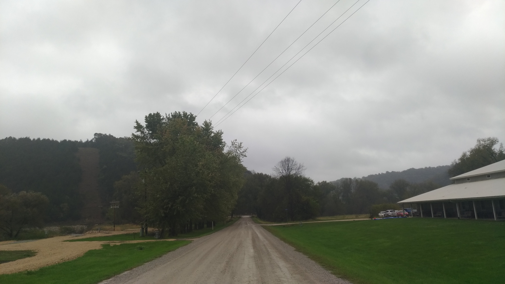
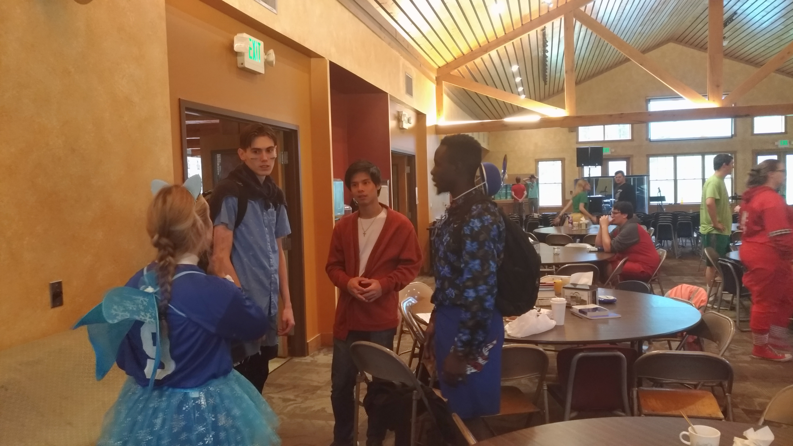
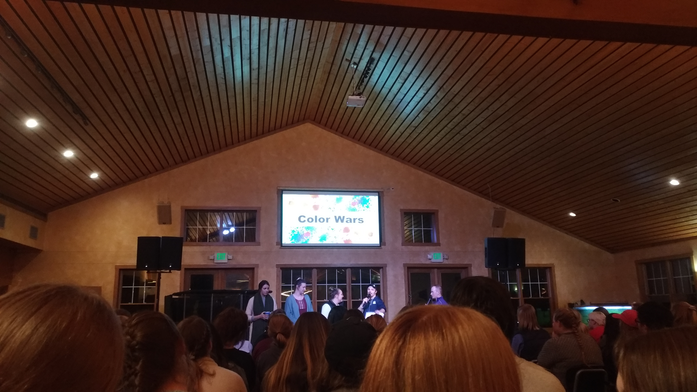
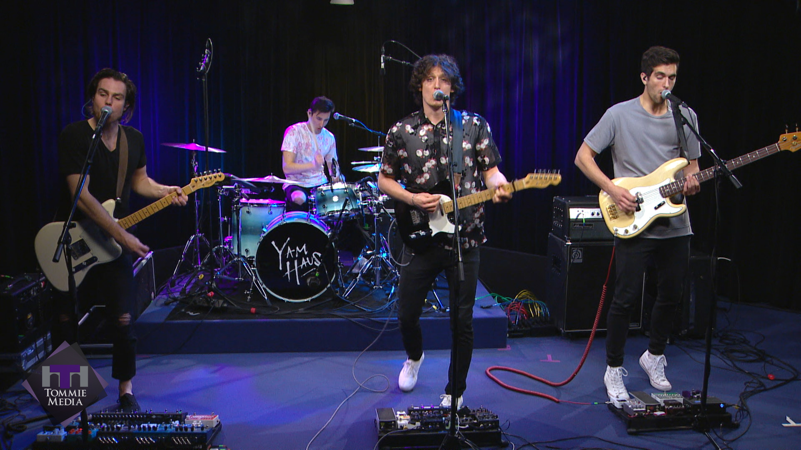

Chi-Alpha offers a variety of activities in each semester, you can really have the colorful life through attending this club. Here I will introduce two of the event which I really impressed.
Fall Retreat
Fall Retreat is similar with the camping trip, this trip offers us an opportunity to be away from the winona and to aproach the nature. The location of the Fall Retreat of the year is at valley Creek Bible Camp in Iowa State. The environment is far from the civilization, you can enjoy the beautiful view here as well !
There were also provided a lot of activities here, especially the "color war", everyone will dress with the costume and have some competing game for each other. For their dress, I think it is very cool!
Althogh it was quite lot of fun when we were playing games. Still, the spiritual formation is important,too. The Pastor Max shared a lot of wisdom in his speech during the camping.
Yam Haus
Chi-Alpha held an concert at the end of the summer vacation . They invited the band calld the Yam Haws, the sound performance was very awesome! Every member did their great job, the song carry me home which brought me a good ending in the summer vacation.